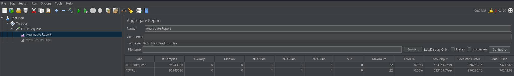

Gatto's Lab
As you might have figured out by now, it's this website! I always wanted to have my own slice of the internet all for myself and so i decided to develop a simple website with my GitHub projects and interests as the subject.
Backend
I originally used Java 25 with Spring Boot as the language and framework, but i decided to remove the framework entirely and design a custom web-server and manage everything manually, because i wanted to have more control and to see what it would be like to develop something without the help of a framework. The system serves the whole site directly from memory, thus completely eliminating disk usage (totally overkill of the sub 1 RPS i receive on average, but it was fun to implement). The backend also communicates with a simple hand-made file-based database to store logs, usage and request metrics. This observability system is fully custom and took me a while to get right as i mostly played around with different techniques and implementations.
Frontend
I decided to use vanilla HTML, CSS and a bit JS in specific places: non "public" pages, where i can view the metrics and logs. The public site can be browsed without JS enabled at all, which is nice as the web of today overly relies on it for functionality that can be achieved with traditional methods without that much effort. The assets are minified with the help of a minifier called HTML Minifier Next in conjunction with custom preprocessing implemented in Java that bundles the HTML, CSS, SVG assets and the JavaScript code, whenever present, into a single page in order to reduce round-trips as much as possible.
Infrastructure
On the infrastructure side i went with Hetzner as the server provider, since their offers were quite affordable for a single individual like myself: a bit over 4€ per month for a VPS with 2 vCPUs, 4GB of RAM, 40GB of storage and 20TB of outgoing network traffic.
Lastly, to deploy the site, i simply execute a shell script i made on the VPS directly that pulls, builds and launches the whole website as a sort of ultra-simplified CI/CD pipeline. Previously i tried using Jenkins and GitHub actions but they were very clunky to use and overly complicated for my needs.
Performance and minimalism
As mentioned earlier i decided to design a custom HTTP(S) webserver instead of using a pre-made one such as Tomcat or Undertow or even a framework such as Spring, because i wanted to try and see how doable would be to custom-make everything. In addition to this i wanted to see how far i could push minimalism and performance. After months of work, i can say that i'm satisfied with the results:

The JMeter test was to get an idea on how fast the HTTP server could handle incoming requests and it simply generates 100 threads and requests the /robots.txt file as hard as it can. The file itself is very small at less than 100 Bytes, so this setup should accentuate overheads in the handling logic. The requests performed by JMeter are simple HTTP/1.1 requests and the whole setup ran on my desktop PC which is equipped with a Ryzen 9 9950X and 32GB of DDR5 @ 6000 MT/s (both JMeter and the webserver were running on my PC, which is not the best way, but this test was to get a feeling of the system). I want to note that the application did not have the request-metric recording login enabled, as that would interfere with the raw throughput results of the HTTP server itself and it would also write massive log files. In short, this test is not super representative of the system as a whole.
Alongside JMeter, i also used VisualVM to monitor the resource usage while running the test:


The system behaved very well under this test: the heap had a consistent sawtooth pattern and it never went above ~ 500MB in used heap, while the allocated heap remained well below 1GB. The number of loaded classes was also very small, which compared to the 10K+ i usually see on enterprise Spring Boot apps is pretty good, though it's obvious since the whole app has zero external dependencies (the JAR is less than 2MB!). The metaspace was also small and basically flat for the entire duration of the test. The cpu usage was very consistent and the virtual threads were flipping all over the place as requests come and go. The server uses a simple virtual-thread-based approach by spawing a new virtual thread each time a socket is accepted. Those virtual threads then remain active up to the maximum keep alive duration and they handle one request per connection at a time. No pipelining is implemented as that would complicate the design quite a bit and i didn't feel like it was worth pursuing.
All in all i feel quite satisfied with the results. I managed to get a glimpse into how far you can go if you strip everything down to it's core. This is not without drawbacks however... The HTTP server is extremely basic and definitely doesn't support the full HTTP spec. The server is so basic that it doesn't support queries in the URL! It literally takes the path and uses it to index a hash map where the static page is stored, that's it! (which is all you need to serve a bunch of static pages). Anything that requires filters and queries can be done via custom headers that the server understands.
You can view the source code at this Git repo.